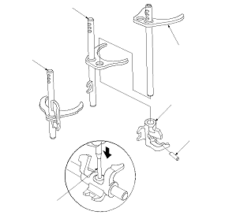

M/T Shift Fork Disassembly/Reassembly
NOTE:
Prior to reassembling, clean all parts in solvent, dry them, and apply lubricant to all contact surfaces.
Press the 5 x 22 mm spring pin until the same surface of the 5th/reverse shift piece.
